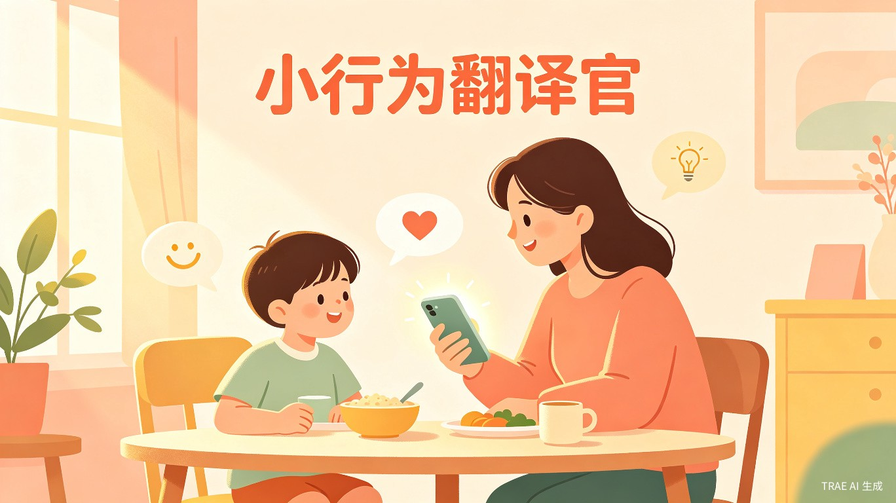
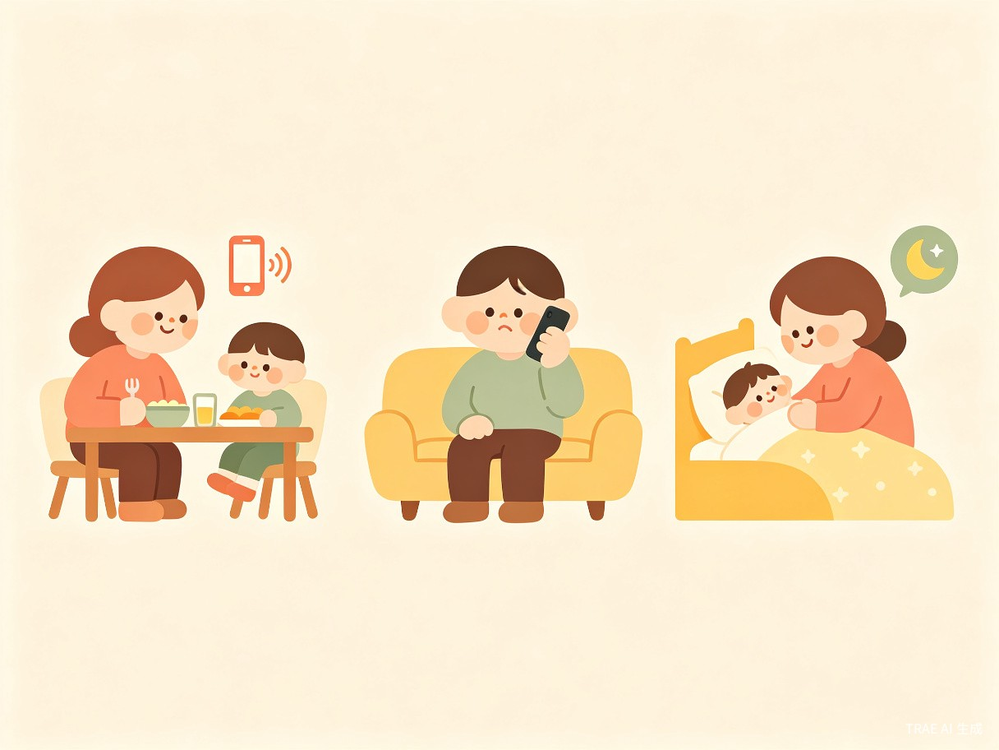
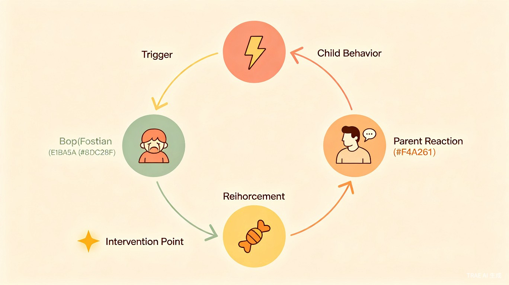
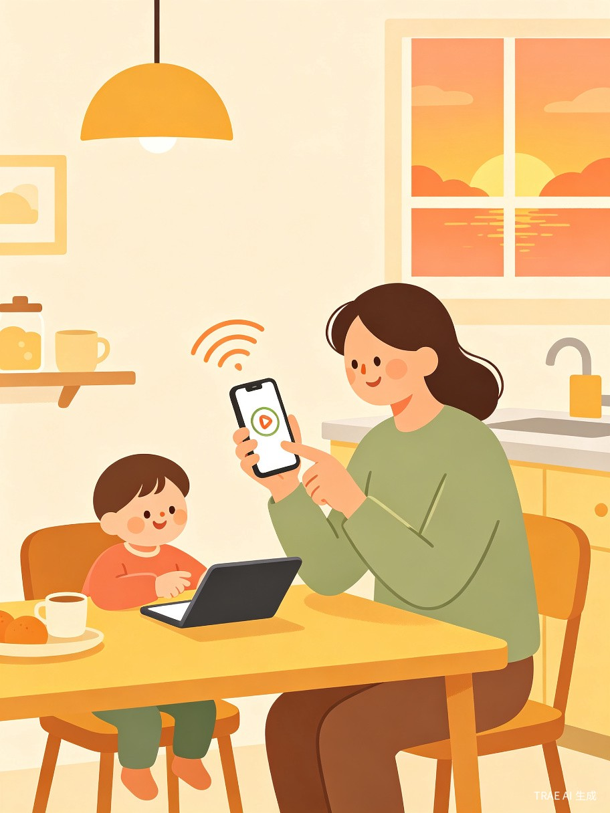
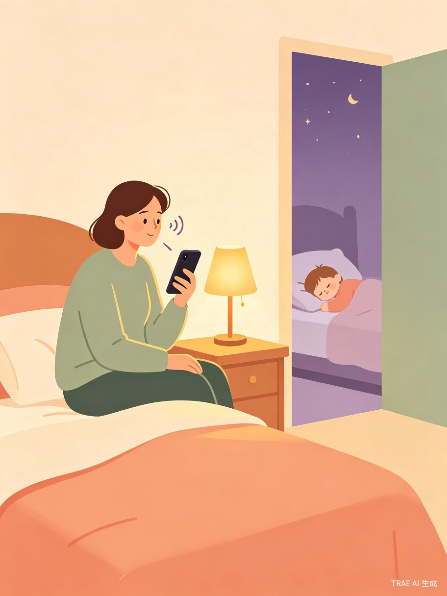

帮家长听见亲子对话里隐藏的行为回路
按下录音，改变就开始

3-8岁孩子每天出现"不听话"行为——哭闹要糖、吃饭必看动画片、一无聊就要吃零食。家长第一反应是吼、妥协或讲道理，但问题反复出现。根本原因是：家长看不到"孩子行为"和"自己反应"之间的隐藏链条，每次都在强化同一个坏习惯。
而家长自己的事后描述往往是不准确的——他们说"我说了三遍他都不听"，但回放真实对话，第一遍的语气就已经在暗示"你再扛一下我就妥协了"。不能看见真实，就无法改变真实。
我是儿童保健的博士生，根据研究发现：大部分儿童行为问题根源不在孩子，而在家庭互动模式。但家长看不到这个模式，只能反复踩同一个坑。临床行为分析的金标准是"直接观察"而非"自我报告"——我想把这套方法做成每个家长都能用的工具：用最自然的方式——说话——帮家长看见真正发生了什么。
一个微信小程序。核心交互就是说话——开饭前按下录音录下真实对话，吼完后悔时说出刚才发生的事，睡前复盘时聊一下今天最头疼的场景——AI从你的话里提取行为回路，帮你看见"孩子行为"和"自己反应"之间的隐藏链条。翻译行为，用说话就行，听见了，才改得了。
3-8岁孩子的父母，尤其是新手爸妈、双职工家庭、祖辈参与带养的家庭。他们焦虑、信息过载、尝试过各种育儿建议但效果不持久。
开饭前按录音，录下"吃饭必须看动画片"的完整拉锯，AI帮你看见自己在第几分钟妥协了
吼完孩子后悔，拿起手机说说刚才发生了什么——说话比打字自然，内疚的时候你不想组织语言，只想说出来
今天最头疼的一件事，聊3-5分钟就够，AI帮你拆成行为快照
某个行为反复出现想搞清楚，5分钟诊断生成完整回路图和替代方案
家长现在的做法是：上小红书搜"孩子不吃饭怎么办"，得到一堆零散建议，试了两三天没效果就放弃，下次再搜一遍。没有人帮他们把"孩子行为—家长反应—强化结果"这个回路拆开来看，所以永远在原地打转，最后只剩"吼"这一个选项。
更要命的是，家长对自己行为的记忆是有偏差的——他们真的以为自己"做到了"，但回放会告诉你另一个故事。

3-8岁是行为习惯养成的关键窗口期。如果能在学龄前帮家庭建立健康的互动模式，很多青少年期的问题——肥胖、注意力缺陷、情绪障碍——可以被前置预防。这不是"治孩子"，是"帮家庭看见自己"。改变家庭互动模式，比单纯说教有效3倍以上。
数据支撑：中国3-8岁儿童约8000万，每个家庭几乎每天都会出现行为冲突。当前市场只有碎片化的育儿建议，没有系统性的行为干预工具。小行为翻译官从学龄前切入，未来覆盖全年龄段家庭健康场景，成为家庭健康基础设施。
父母为育儿问题付费意愿极强。产品可以从免费诊断工具切入，后续扩展为订阅制深度干预方案、家庭咨询服务、与儿童健康机构合作。场景高频、用户生命周期长、口碑传播效应强。我的学术背景和产品实习经历，让我同时具备内容专业性和产品落地能力。
知道自己在录音，家长会下意识调整行为——就像行车记录仪让司机开得更规矩。按下录音的那一刻，改变就已经开始了。 这比任何"7天打卡"都更即时、更不需要意志力。
而事后说话复盘，天然比打字更能保留情绪信息和语气的细微差别——你在说"我就吼了他"的时候，AI能听到你说这句话的声音在发抖，这是行为回路的重要信号。
录音是贯穿所有场景的核心交互——实时录音、事后说话复盘、睡前语音聊，比打字更自然，比自我报告更保真
从语音/对话中提取"触发→试探→妥协→强化"的行为链，生成可视化行为回路图，家长一眼看懂"怎么就绕回来了"
实时录音、事后说话复盘、睡前聊一聊——同一个翻译引擎，三种最低门槛的入口
"你上周第2分钟妥协，这周第5分钟——你在变强"，双边动态追踪让改变可感知
内置医疗风险排查机制，异常行为模式自动识别并引导就医
本地处理，只提取行为链结构，不保存原始录音，用户可随时删除
开饭前/睡前/出门前，家长按录音："接下来又要打仗了。"
录下3-15分钟亲子真实对话。
语音转文字 + 说话人识别，自动提取：触发、试探、妥协（精确到秒）、强化。
可视化展示完整行为回路，一句话解读孩子学到了什么。
⚠️ 第2分38秒，你说"不行"，但4分12秒你给了手机——孩子扛了3分半就赢了。
孩子每次吃饭学到的是：扛3分钟就能看动画片。
AI自动将对话拆解为四个关键节点，生成一目了然的行为回路图。家长能清楚看到"触发→试探→妥协→强化"的完整链条。
每个节点标注精确时间点，让家长知道自己在哪一刻"失守"，孩子又学到了什么。

吼完/妥协完/威胁完，打开手机说一句："我刚才因为他不写作业吼了他，然后他哭了，最后我还是让他边看动画片边写了。"
"你最后答应他的时候，心里是怎么想的？" / "你吼完他，自己什么感觉？"
① 修复话术 ② 行为快照 ③ 情绪标记 ④ 引导到完整诊断
① 修复话术："妈妈刚才太着急了，不是因为你不乖——我们重新来"
② 行为快照：拒绝写作业→你吼→孩子哭→你妥协→孩子学到"哭就能看动画片"
③ 情绪标记：AI听到你在说"我就吼了他"时声音在发抖——你不只是愤怒，还有自责，这种情绪会让孩子更恐惧
开饭前按下录音，记录下"吃饭拉锯战"的完整过程。AI会在后台默默分析，不需要家长额外操作。
录音结束后，家长看到的是一份清晰的行为分析报告——不是指责，而是"原来如此"的恍然大悟。

选【吃饭】标签，说"今天又是因为看动画片才肯吃饭"
偏感受的追问：你当时最崩溃的是哪一刻？ / 正向追问：今天有没有哪一次，你觉得处理得比昨天好？
一张小卡片：今天的回路 + 一句小结
AI自动叠加生成家庭行为模式全景
这7天你有6次吃饭冲突，5次都发生在晚饭，4次你的妥协出现在第3-5分钟之间——孩子已经精确算出了你的等待时间。
孩子睡着后，家长坐在床边，花3-5分钟聊聊今天最头疼的一件事。不需要组织语言，就像跟朋友吐槽一样自然。
AI会生成一张"今日微回路卡"，累积7天后自动识别反复出现的模式——"原来孩子已经精确算出了我的等待时间"。

"你上周第2分钟妥协，这周第5分钟——你在变强。"
但孩子的试探也在升级——"从3分钟缩短到了1分钟"。AI双边动态追踪，让家长和孩子都在成长。
积累足够记录后，AI生成家庭行为模式全景——"你这30次冲突中，21次都发生在晚饭后1小时内，19次你的反应都是先温柔后妥协——孩子学到的是'扛15分钟就能赢'。"
Behavior Chain Analysis，源自应用行为分析（ABA）理论，用于拆解"触发-行为-后果"的完整链条
Family Systems Theory，强调儿童行为是家庭互动模式的产物，而非孤立问题
Social Learning Theory，解释孩子如何通过观察和模仿习得行为模式